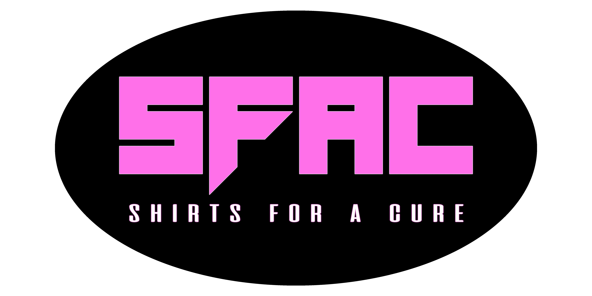

Shirts For a Cure
Our Mission
Our mission is to provide financial assistance to underprivelaged women who cannot afford expensive breast care treatment, medicine, and/or therapy. The Shirts For a Cure Project (SFAC) was launched by Syrentha J. Savio Endowment (SSE). Our goal is to raise awareness about breast cancer prevention. When a band donates a shirt design to SFAC, the design becomes exlusive to SSE. We sell the shirt and use the proceeds to help women fight their battle with breast cancer. Take a look around our website to find a fun t-shirt or accessory for you! We have over 150 shirts, each printed on 100% pre-shrunk cotton, unless otherwise stated. For a donation of $14 (plus shipping and handling) you will be helping someone who is in need, as well as receiving an exclusive shirt or accessory from your favorite band!